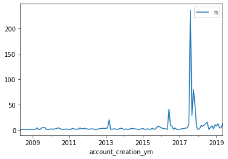
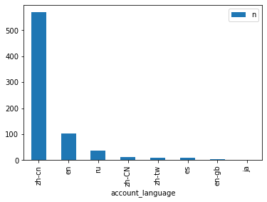
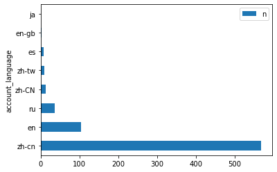
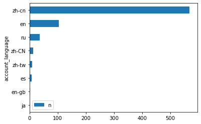
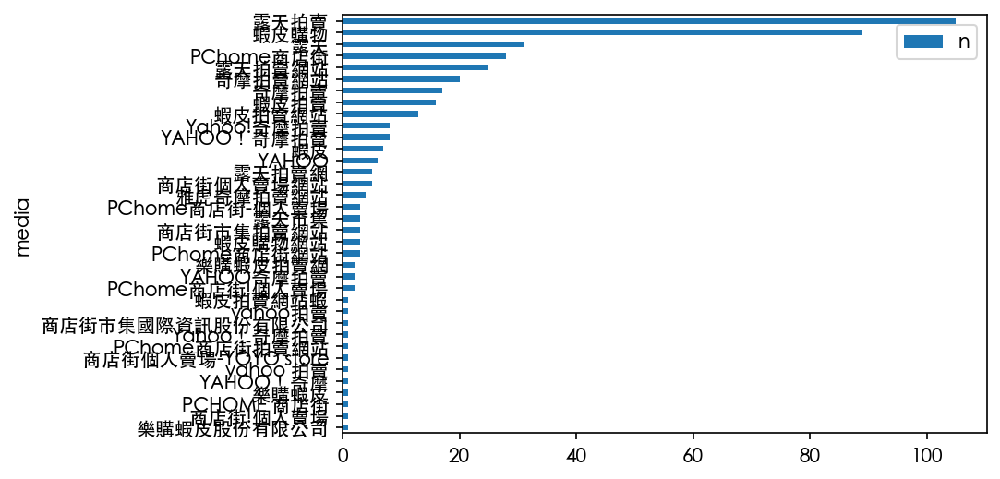

Pandas: filter, select, and timeline process
Contents
Pandas: filter, select, and timeline process#
Load data (twitter account)#
import pandas as pd
user_df = pd.read_csv("https://raw.githubusercontent.com/p4css/py4css/main/data/twitter_user1_hashed.csv")
user_df
| userid | user_display_name | user_screen_name | user_reported_location | user_profile_description | user_profile_url | follower_count | following_count | account_creation_date | account_language | |
|---|---|---|---|---|---|---|---|---|---|---|
| 0 | vMm2zemFOF7kmXoDyX24Bo+TorqhNutpZlATYyxsE= | vMm2zemFOF7kmXoDyX24Bo+TorqhNutpZlATYyxsE= | vMm2zemFOF7kmXoDyX24Bo+TorqhNutpZlATYyxsE= | NaN | NaN | NaN | 1 | 52 | 2017-08-30 | zh-cn |
| 1 | 919755217121316864 | ailaiyi5 | wuming11xia | NaN | NaN | NaN | 0 | 0 | 2017-10-16 | zh-cn |
| 2 | 747292706536226816 | 牛小牛 | gurevadona88 | NaN | NaN | NaN | 23949 | 52 | 2016-06-27 | zh-cn |
| 3 | q2SMGvHasu+nugbpNMDCjr2qlZp3FCiGYDLht+gW5pw= | q2SMGvHasu+nugbpNMDCjr2qlZp3FCiGYDLht+gW5pw= | q2SMGvHasu+nugbpNMDCjr2qlZp3FCiGYDLht+gW5pw= | NaN | NaN | NaN | 17 | 34 | 2016-08-08 | es |
| 4 | 907348345563303940 | lishuishi | lishuishi | NaN | NaN | NaN | 0 | 0 | 2017-09-11 | zh-tw |
| ... | ... | ... | ... | ... | ... | ... | ... | ... | ... | ... |
| 739 | eIIpT22c85XhPdvYaqcve4gOzlYQ7zgEKd4eXtO0= | eIIpT22c85XhPdvYaqcve4gOzlYQ7zgEKd4eXtO0= | eIIpT22c85XhPdvYaqcve4gOzlYQ7zgEKd4eXtO0= | NaN | NaN | NaN | 2 | 36 | 2017-08-19 | zh-cn |
| 740 | EUd69lDLkGP47adDGEABXUNoNCMl3MUunT3RW6lRiJc= | EUd69lDLkGP47adDGEABXUNoNCMl3MUunT3RW6lRiJc= | EUd69lDLkGP47adDGEABXUNoNCMl3MUunT3RW6lRiJc= | NaN | NaN | NaN | 75 | 229 | 2016-01-18 | zh-cn |
| 741 | 3289017240 | tiberiyztrple | tiberiyztrple | Cicero, IL | Tripper | NaN | 18781 | 1 | 2015-07-23 | zh-cn |
| 742 | 930597980083650561 | 林小芬 | RosRos2349 | NaN | NaN | NaN | 0 | 0 | 2017-11-15 | zh-cn |
| 743 | 2993185258 | HK時政直擊 | HKpoliticalnew | Tsuen Wan District, Hong Kong | Love Hong Kong, love China.We should pay atten... | https://t.co/5u2Qw5PaKt | 22551 | 66 | 2015-01-22 | zh-cn |
744 rows × 10 columns
user_df.dtypes
userid object
user_display_name object
user_screen_name object
user_reported_location object
user_profile_description object
user_profile_url object
follower_count int64
following_count int64
account_creation_date object
account_language object
dtype: object
Tweets over time#
Convert str to datetime#
https://datatofish.com/strings-to-datetime-pandas/
user_df['account_creation_date'] = pd.to_datetime(user_df['account_creation_date'], format="%Y-%m-%d")
user_df.info()
<class 'pandas.core.frame.DataFrame'>
RangeIndex: 744 entries, 0 to 743
Data columns (total 10 columns):
# Column Non-Null Count Dtype
--- ------ -------------- -----
0 userid 744 non-null object
1 user_display_name 744 non-null object
2 user_screen_name 744 non-null object
3 user_reported_location 182 non-null object
4 user_profile_description 189 non-null object
5 user_profile_url 14 non-null object
6 follower_count 744 non-null int64
7 following_count 744 non-null int64
8 account_creation_date 744 non-null datetime64[ns]
9 account_language 744 non-null object
dtypes: datetime64[ns](1), int64(2), object(7)
memory usage: 58.2+ KB
# drug_df.groupby('pubMediaType')['pname', 'agency'].count()
sum_df = user_df.groupby('account_creation_date')['userid'].count()
user_df['account_creation_year'] = user_df['account_creation_date'].apply(lambda x:x.year)
user_df.head()
| userid | user_display_name | user_screen_name | user_reported_location | user_profile_description | user_profile_url | follower_count | following_count | account_creation_date | account_language | account_creation_year | |
|---|---|---|---|---|---|---|---|---|---|---|---|
| 0 | vMm2zemFOF7kmXoDyX24Bo+TorqhNutpZlATYyxsE= | vMm2zemFOF7kmXoDyX24Bo+TorqhNutpZlATYyxsE= | vMm2zemFOF7kmXoDyX24Bo+TorqhNutpZlATYyxsE= | NaN | NaN | NaN | 1 | 52 | 2017-08-30 | zh-cn | 2017 |
| 1 | 919755217121316864 | ailaiyi5 | wuming11xia | NaN | NaN | NaN | 0 | 0 | 2017-10-16 | zh-cn | 2017 |
| 2 | 747292706536226816 | 牛小牛 | gurevadona88 | NaN | NaN | NaN | 23949 | 52 | 2016-06-27 | zh-cn | 2016 |
| 3 | q2SMGvHasu+nugbpNMDCjr2qlZp3FCiGYDLht+gW5pw= | q2SMGvHasu+nugbpNMDCjr2qlZp3FCiGYDLht+gW5pw= | q2SMGvHasu+nugbpNMDCjr2qlZp3FCiGYDLht+gW5pw= | NaN | NaN | NaN | 17 | 34 | 2016-08-08 | es | 2016 |
| 4 | 907348345563303940 | lishuishi | lishuishi | NaN | NaN | NaN | 0 | 0 | 2017-09-11 | zh-tw | 2017 |
user_df['account_creation_ym'] = user_df['account_creation_date'].apply(lambda x:x.to_period('M'))
user_df.head()
| userid | user_display_name | user_screen_name | user_reported_location | user_profile_description | user_profile_url | follower_count | following_count | account_creation_date | account_language | account_creation_year | account_creation_ym | |
|---|---|---|---|---|---|---|---|---|---|---|---|---|
| 0 | vMm2zemFOF7kmXoDyX24Bo+TorqhNutpZlATYyxsE= | vMm2zemFOF7kmXoDyX24Bo+TorqhNutpZlATYyxsE= | vMm2zemFOF7kmXoDyX24Bo+TorqhNutpZlATYyxsE= | NaN | NaN | NaN | 1 | 52 | 2017-08-30 | zh-cn | 2017 | 2017-08 |
| 1 | 919755217121316864 | ailaiyi5 | wuming11xia | NaN | NaN | NaN | 0 | 0 | 2017-10-16 | zh-cn | 2017 | 2017-10 |
| 2 | 747292706536226816 | 牛小牛 | gurevadona88 | NaN | NaN | NaN | 23949 | 52 | 2016-06-27 | zh-cn | 2016 | 2016-06 |
| 3 | q2SMGvHasu+nugbpNMDCjr2qlZp3FCiGYDLht+gW5pw= | q2SMGvHasu+nugbpNMDCjr2qlZp3FCiGYDLht+gW5pw= | q2SMGvHasu+nugbpNMDCjr2qlZp3FCiGYDLht+gW5pw= | NaN | NaN | NaN | 17 | 34 | 2016-08-08 | es | 2016 | 2016-08 |
| 4 | 907348345563303940 | lishuishi | lishuishi | NaN | NaN | NaN | 0 | 0 | 2017-09-11 | zh-tw | 2017 | 2017-09 |
user_df['account_creation_date']
0 2017-08-30
1 2017-10-16
2 2016-06-27
3 2016-08-08
4 2017-09-11
...
739 2017-08-19
740 2016-01-18
741 2015-07-23
742 2017-11-15
743 2015-01-22
Name: account_creation_date, Length: 744, dtype: datetime64[ns]
https://pandas.pydata.org/docs/reference/api/pandas.Series.dt.to_period.html https://pandas.pydata.org/docs/user_guide/timeseries.html#timeseries-offset-aliases
# df['account_creation_ym'] = df['account_creation_date'].apply(lambda x:x.floor("M"))
user_df['account_creation_ym'] = user_df['account_creation_date'].dt.to_period("M")
user_df
| userid | user_display_name | user_screen_name | user_reported_location | user_profile_description | user_profile_url | follower_count | following_count | account_creation_date | account_language | account_creation_year | account_creation_ym | |
|---|---|---|---|---|---|---|---|---|---|---|---|---|
| 0 | vMm2zemFOF7kmXoDyX24Bo+TorqhNutpZlATYyxsE= | vMm2zemFOF7kmXoDyX24Bo+TorqhNutpZlATYyxsE= | vMm2zemFOF7kmXoDyX24Bo+TorqhNutpZlATYyxsE= | NaN | NaN | NaN | 1 | 52 | 2017-08-30 | zh-cn | 2017 | 2017-08 |
| 1 | 919755217121316864 | ailaiyi5 | wuming11xia | NaN | NaN | NaN | 0 | 0 | 2017-10-16 | zh-cn | 2017 | 2017-10 |
| 2 | 747292706536226816 | 牛小牛 | gurevadona88 | NaN | NaN | NaN | 23949 | 52 | 2016-06-27 | zh-cn | 2016 | 2016-06 |
| 3 | q2SMGvHasu+nugbpNMDCjr2qlZp3FCiGYDLht+gW5pw= | q2SMGvHasu+nugbpNMDCjr2qlZp3FCiGYDLht+gW5pw= | q2SMGvHasu+nugbpNMDCjr2qlZp3FCiGYDLht+gW5pw= | NaN | NaN | NaN | 17 | 34 | 2016-08-08 | es | 2016 | 2016-08 |
| 4 | 907348345563303940 | lishuishi | lishuishi | NaN | NaN | NaN | 0 | 0 | 2017-09-11 | zh-tw | 2017 | 2017-09 |
| ... | ... | ... | ... | ... | ... | ... | ... | ... | ... | ... | ... | ... |
| 739 | eIIpT22c85XhPdvYaqcve4gOzlYQ7zgEKd4eXtO0= | eIIpT22c85XhPdvYaqcve4gOzlYQ7zgEKd4eXtO0= | eIIpT22c85XhPdvYaqcve4gOzlYQ7zgEKd4eXtO0= | NaN | NaN | NaN | 2 | 36 | 2017-08-19 | zh-cn | 2017 | 2017-08 |
| 740 | EUd69lDLkGP47adDGEABXUNoNCMl3MUunT3RW6lRiJc= | EUd69lDLkGP47adDGEABXUNoNCMl3MUunT3RW6lRiJc= | EUd69lDLkGP47adDGEABXUNoNCMl3MUunT3RW6lRiJc= | NaN | NaN | NaN | 75 | 229 | 2016-01-18 | zh-cn | 2016 | 2016-01 |
| 741 | 3289017240 | tiberiyztrple | tiberiyztrple | Cicero, IL | Tripper | NaN | 18781 | 1 | 2015-07-23 | zh-cn | 2015 | 2015-07 |
| 742 | 930597980083650561 | 林小芬 | RosRos2349 | NaN | NaN | NaN | 0 | 0 | 2017-11-15 | zh-cn | 2017 | 2017-11 |
| 743 | 2993185258 | HK時政直擊 | HKpoliticalnew | Tsuen Wan District, Hong Kong | Love Hong Kong, love China.We should pay atten... | https://t.co/5u2Qw5PaKt | 22551 | 66 | 2015-01-22 | zh-cn | 2015 | 2015-01 |
744 rows × 12 columns
sum_df = user_df.groupby('account_creation_ym')['userid'].count()
sum_df = sum_df.reset_index(name='n')
type(sum_df)
sum_df
| account_creation_ym | n | |
|---|---|---|
| 0 | 2008-05 | 1 |
| 1 | 2008-07 | 1 |
| 2 | 2008-11 | 1 |
| 3 | 2009-01 | 1 |
| 4 | 2009-02 | 1 |
| ... | ... | ... |
| 98 | 2019-01 | 8 |
| 99 | 2019-02 | 12 |
| 100 | 2019-03 | 4 |
| 101 | 2019-04 | 4 |
| 102 | 2019-05 | 12 |
103 rows × 2 columns
Print each row#
import pandas as pd
test_df = pd.DataFrame({'c1': [10, 11, 12], 'c2': [100, 110, 120]})
for index, row in test_df.iterrows():
print(row['c1'], row['c2'])
10 100
11 110
12 120
for index, row in sum_df.iterrows():
print(row['account_creation_ym'], row['n'])
2008-05 1
2008-07 1
2008-11 1
2009-01 1
2009-02 1
2009-03 1
2009-04 4
2009-05 1
2009-06 1
2009-07 4
2009-09 5
2009-10 1
2009-12 1
2010-01 2
2010-02 1
2010-03 2
2010-04 2
2010-06 4
2010-08 1
2010-09 1
2010-10 1
2010-11 2
2010-12 1
2011-01 1
2011-02 1
2011-03 3
2011-05 1
2011-06 2
2011-07 1
2011-08 4
2011-09 2
2011-11 3
2011-12 2
2012-01 2
2012-02 1
2012-03 2
2012-04 2
2012-06 1
2012-07 1
2012-08 2
2012-11 3
2012-12 3
2013-01 3
2013-02 4
2013-03 20
2013-04 1
2013-06 2
2013-07 2
2013-08 1
2013-09 1
2013-10 3
2013-11 3
2013-12 2
2014-01 1
2014-02 2
2014-03 1
2014-04 1
2014-05 3
2014-08 2
2014-10 1
2014-11 1
2015-01 3
2015-02 1
2015-04 2
2015-06 1
2015-07 3
2015-09 1
2015-10 5
2015-11 7
2015-12 6
2016-01 4
2016-02 3
2016-04 2
2016-05 1
2016-06 41
2016-07 9
2016-08 7
2016-09 1
2016-10 4
2016-11 1
2017-01 1
2017-02 2
2017-06 4
2017-07 11
2017-08 237
2017-09 28
2017-10 80
2017-11 47
2017-12 6
2018-01 1
2018-02 2
2018-03 9
2018-04 7
2018-07 15
2018-08 1
2018-10 8
2018-11 2
2018-12 10
2019-01 8
2019-02 12
2019-03 4
2019-04 4
2019-05 12
Plotting#
https://www.w3schools.com/python/pandas/pandas_plotting.asp
# %matplotlib widget
# %matplotlib inline
import pandas as pd
import matplotlib.pyplot as plt
sum_df.plot(x = 'account_creation_ym', y = 'n')
# plt.show()
plt.savefig('fig.pdf')

Twitter User Productivity#
lang_count = user_df.groupby('account_language')["userid"].count()
toplot = lang_count.reset_index(name="n").sort_values('n', ascending=False)
toplot.plot(kind="bar", x="account_language")
toplot.plot(kind="barh", x="account_language")
toplot.plot.barh(x="account_language").invert_yaxis()
plt.show()



Filter rows by column value#
Load data (drug ill-ad)#
import pandas as pd
drug_df = pd.read_csv('https://raw.githubusercontent.com/p4css/py4css/main/data/drug_156_2.csv')
# drug_df
drug_df.columns
Index(['違規產品名稱', '違規廠商名稱或負責人', '處分機關', '處分日期', '處分法條', '違規情節', '刊播日期',
'刊播媒體類別', '刊播媒體', '查處情形'],
dtype='object')
drug_df
| 違規產品名稱 | 違規廠商名稱或負責人 | 處分機關 | 處分日期 | 處分法條 | 違規情節 | 刊播日期 | 刊播媒體類別 | 刊播媒體 | 查處情形 | |
|---|---|---|---|---|---|---|---|---|---|---|
| 0 | 維他肝 | 豐怡生化科技股份有限公司/朱O | NaN | 03 31 2022 12:00AM | NaN | 廣告內容誇大不實 | 02 2 2022 12:00AM | 廣播電台 | 噶瑪蘭廣播電台股份有限公司 | NaN |
| 1 | 現貨澳洲Swisse ULTIBOOST維他命D片calcium vitamin VITAM... | 張O雯/張O雯 | NaN | 01 21 2022 12:00AM | NaN | 廣告違規 | 11 30 2021 12:00AM | 網路 | 蝦皮購物 | 輔導結案 |
| 2 | ✈日本 代購 參天製藥 處方簽點眼液 | 蘇O涵/蘇O涵 | NaN | 01 25 2022 12:00AM | NaN | 無照藥商 | 08 27 2021 12:00AM | 網路 | 蝦皮購物 | NaN |
| 3 | ✈日本 代購 TSUMURA 中將湯 24天包裝 | 蘇O涵/蘇O涵 | NaN | 01 25 2022 12:00AM | NaN | 無照藥商 | 08 27 2021 12:00AM | 網路 | 蝦皮購物 | 輔導結案 |
| 4 | _Salty.shop 日本代購 樂敦小花 | 曾O嫺/曾O嫺 | NaN | 02 17 2022 12:00AM | 藥事法第27條 | 無照藥商 | 12 6 2021 12:00AM | 網路 | 蝦皮購物 | 處分結案 |
| ... | ... | ... | ... | ... | ... | ... | ... | ... | ... | ... |
| 2967 | *健人館* 千鶴薄荷棒11g*2個 | 新東海藥局/ O聰敏 | NaN | NaN | 藥事法第27條 | 標示內容與規定不符 | 05 6 2020 12:00AM | 網路 | NaN | 處分結案 |
| 2968 | （現貨）GO LIVER DETOX 高之源 護肝排毒膠囊 120粒 | 連O毅/連O毅 | NaN | 06 30 2020 12:00AM | 藥事法第27條 | 無照藥商 | 02 5 2020 12:00AM | 網路 | 蝦皮購物 | 處分結案 |
| 2969 | 日本帶回樂敦小花新鮮貨 | 張O萍/張O萍 | NaN | 06 23 2020 12:00AM | NaN | 難以判定產品屬性 | 03 10 2020 12:00AM | 網路 | 蝦皮購物 | 輔導結案 |
| 2970 | 全新 洗眼杯 可平信 洗眼 小林製藥 小花 ROHTO Lycee 可搭配生理食鹽水 空汙 ... | 盧O/盧O | NaN | 09 4 2020 12:00AM | NaN | 無照藥商 | 03 10 2020 12:00AM | 網路 | 蝦皮購物 | 輔導結案 |
| 2971 | 0.9%生理食鹽水 20ml 預購最低價 每人限購2盒 | 張O軒/張O軒 | NaN | 06 11 2020 12:00AM | NaN | 無照藥商 | 03 31 2020 12:00AM | 網路 | 蝦皮購物 | NaN |
2972 rows × 10 columns
By contains#
Python | Pandas Series.str.contains() - GeeksforGeeks
pat = '假[\s\S]{0,6}新聞|假[\s\S]{0,6}消息|不實[\s\S]{0,6}新聞|不實[\s\S]{0,6}消息|假[\s\S]{0,6}訊息|不實[\s\S]{0,6}訊息'
filtered_comment = comment[comment['ccontent'].str.contains(pat=pat, na=False)]
pat = '代購|帶回'
filtered_drug_df = drug_df[drug_df['違規產品名稱'].str.contains(pat=pat, na=False)]
filtered_drug_df
| 違規產品名稱 | 違規廠商名稱或負責人 | 處分機關 | 處分日期 | 處分法條 | 違規情節 | 刊播日期 | 刊播媒體類別 | 刊播媒體 | 查處情形 | |
|---|---|---|---|---|---|---|---|---|---|---|
| 2 | ✈日本 代購 參天製藥 處方簽點眼液 | 蘇O涵/蘇O涵 | NaN | 01 25 2022 12:00AM | NaN | 無照藥商 | 08 27 2021 12:00AM | 網路 | 蝦皮購物 | NaN |
| 3 | ✈日本 代購 TSUMURA 中將湯 24天包裝 | 蘇O涵/蘇O涵 | NaN | 01 25 2022 12:00AM | NaN | 無照藥商 | 08 27 2021 12:00AM | 網路 | 蝦皮購物 | 輔導結案 |
| 4 | _Salty.shop 日本代購 樂敦小花 | 曾O嫺/曾O嫺 | NaN | 02 17 2022 12:00AM | 藥事法第27條 | 無照藥商 | 12 6 2021 12:00AM | 網路 | 蝦皮購物 | 處分結案 |
| 9 | 現貨正品 Eve 快速出貨 日本代購 白兔60 藍兔 40 eve 金兔 EVE 兔子 娃娃... | 張O恩/張O恩 | NaN | 03 4 2022 12:00AM | NaN | 無照藥商 | 12 21 2021 12:00AM | 網路 | 蝦皮拍賣網站 | 輔導結案 |
| 18 | [海外代購]纈草根膠囊-120毫克-240粒-睡眠 | 江O君/江O君 | NaN | 03 15 2022 12:00AM | NaN | 無照藥商 | 08 2 2021 12:00AM | 網路 | 蝦皮購物 | NaN |
| ... | ... | ... | ... | ... | ... | ... | ... | ... | ... | ... |
| 2947 | 「泰國代購🇹🇭」泰國🇹🇭Hirudoid強效去疤膏（預購） | 魏O芝/魏O芝 | NaN | 06 5 2020 12:00AM | 藥事法第27條 | 無照藥商 | 12 17 2019 12:00AM | 網路 | 蝦皮購物 | 處分結案 |
| 2948 | eBuy美國代購美国正品GNC银杏叶精华提高增强记忆力预防老年痴呆补脑健脑 | 蕭O雄/蕭O雄 | NaN | NaN | NaN | 無照藥商 | 03 9 2020 12:00AM | 網路 | 蝦皮購物 | NaN |
| 2957 | 【現貨】H&H 久光 Hisamitsu酸痛舒緩貼布 120枚 140枚 痠痛 舒緩 貼布 ... | 胡OO/胡OO | NaN | 07 16 2020 12:00AM | 藥事法第27條 | 無照藥商 | 02 27 2020 12:00AM | 網路 | 蝦皮購物 | 處分結案 |
| 2965 | 美國代購 ，9:5%折扣落建髮洗，兩款都有 | 陳O鵬/陳O鵬 | NaN | 07 16 2020 12:00AM | NaN | 藥品未申請查驗登記 | 04 16 2020 12:00AM | 網路 | 樂購蝦皮股份有限公司 | 輔導結案 |
| 2969 | 日本帶回樂敦小花新鮮貨 | 張O萍/張O萍 | NaN | 06 23 2020 12:00AM | NaN | 難以判定產品屬性 | 03 10 2020 12:00AM | 網路 | 蝦皮購物 | 輔導結案 |
489 rows × 10 columns
By arithemetic comparison#
https://www.geeksforgeeks.org/ways-to-filter-pandas-dataframe-by-column-values/
media_count = drug_df["刊播媒體"].value_counts()
print(type(media_count))
media_count = media_count.reset_index(name = "n").rename(columns={"index": "media"})
media_count
<class 'pandas.core.series.Series'>
| media | n | |
|---|---|---|
| 0 | 蝦皮購物 | 523 |
| 1 | 露天拍賣 | 443 |
| 2 | PChome商店街 | 164 |
| 3 | 蝦皮拍賣 | 158 |
| 4 | 露天拍賣網站 | 119 |
| ... | ... | ... |
| 415 | 臺中群健有線電視 | 1 |
| 416 | 世新有線電視股份有限公司 | 1 |
| 417 | 群健有線電視 | 1 |
| 418 | 金頻道有線電視事業股份有限公司 | 1 |
| 419 | 吉隆有線電視股份有限公司、吉隆有線電視股份有限公司 | 1 |
420 rows × 2 columns
media_count.loc[media_count["n"]>5]
| media | n | |
|---|---|---|
| 0 | 蝦皮購物 | 523 |
| 1 | 露天拍賣 | 443 |
| 2 | PChome商店街 | 164 |
| 3 | 蝦皮拍賣 | 158 |
| 4 | 露天拍賣網站 | 119 |
| 5 | 蝦皮拍賣網站 | 98 |
| 6 | 露天 | 63 |
| 7 | 奇摩拍賣網站 | 62 |
| 8 | Yahoo!奇摩拍賣 | 60 |
| 9 | 奇摩拍賣 | 57 |
| 10 | 蝦皮 | 39 |
| 11 | YAHOO！奇摩拍賣 | 31 |
| 12 | 臉書 | 20 |
| 13 | YAHOO奇摩拍賣 | 19 |
| 14 | YAHOO | 18 |
| 15 | PChome商店街-個人賣場 | 15 |
| 16 | 商店街個人賣場網站 | 14 |
| 17 | 蝦皮購物網站 | 14 |
| 18 | "PCHOME | 13 |
| 19 | PCHOME個人賣場 | 13 |
| 20 | 露天拍賣網 | 12 |
| 21 | 吉隆有線電視股份有限公司 | 11 |
| 22 | Yahoo！奇摩拍賣 | 11 |
| 23 | 旋轉拍賣 | 10 |
| 24 | 9 | |
| 25 | Shopee蝦皮拍賣 | 9 |
| 26 | 8 | |
| 27 | 雅虎拍賣 | 8 |
| 28 | 康是美 | 8 |
| 29 | 蝦皮拍賣網 | 8 |
| 30 | 露天市集 | 7 |
| 31 | 平安藥局 | 7 |
| 32 | 壹週刊 | 7 |
| 33 | 雅虎奇摩拍賣網站 | 7 |
| 34 | 新台北有線電視股份有限公司 | 6 |
| 35 | PCHOME 商店街 | 6 |
| 36 | YAHOO！奇摩拍賣網 | 6 |
| 37 | Youtube | 6 |
By one-of#
https://www.geeksforgeeks.org/ways-to-filter-pandas-dataframe-by-column-values/
options = ['蝦皮購物', '露天拍賣']
media_count.loc[media_count["media"].isin(options)]
| media | n | |
|---|---|---|
| 0 | 蝦皮購物 | 523 |
| 1 | 露天拍賣 | 443 |
Plotting#
pat1 = '代購|帶回'
pat2 = '蝦皮|露天|拍賣|YAHOO|商店街'
filtered_drug_df = drug_df.loc[drug_df['違規產品名稱'].str.contains(pat=pat1, na=False) &
drug_df['刊播媒體'].str.contains(pat=pat2, na=False)]
filtered_drug_df
| 違規產品名稱 | 違規廠商名稱或負責人 | 處分機關 | 處分日期 | 處分法條 | 違規情節 | 刊播日期 | 刊播媒體類別 | 刊播媒體 | 查處情形 | |
|---|---|---|---|---|---|---|---|---|---|---|
| 2 | ✈日本 代購 參天製藥 處方簽點眼液 | 蘇O涵/蘇O涵 | NaN | 01 25 2022 12:00AM | NaN | 無照藥商 | 08 27 2021 12:00AM | 網路 | 蝦皮購物 | NaN |
| 3 | ✈日本 代購 TSUMURA 中將湯 24天包裝 | 蘇O涵/蘇O涵 | NaN | 01 25 2022 12:00AM | NaN | 無照藥商 | 08 27 2021 12:00AM | 網路 | 蝦皮購物 | 輔導結案 |
| 4 | _Salty.shop 日本代購 樂敦小花 | 曾O嫺/曾O嫺 | NaN | 02 17 2022 12:00AM | 藥事法第27條 | 無照藥商 | 12 6 2021 12:00AM | 網路 | 蝦皮購物 | 處分結案 |
| 9 | 現貨正品 Eve 快速出貨 日本代購 白兔60 藍兔 40 eve 金兔 EVE 兔子 娃娃... | 張O恩/張O恩 | NaN | 03 4 2022 12:00AM | NaN | 無照藥商 | 12 21 2021 12:00AM | 網路 | 蝦皮拍賣網站 | 輔導結案 |
| 18 | [海外代購]纈草根膠囊-120毫克-240粒-睡眠 | 江O君/江O君 | NaN | 03 15 2022 12:00AM | NaN | 無照藥商 | 08 2 2021 12:00AM | 網路 | 蝦皮購物 | NaN |
| ... | ... | ... | ... | ... | ... | ... | ... | ... | ... | ... |
| 2947 | 「泰國代購🇹🇭」泰國🇹🇭Hirudoid強效去疤膏（預購） | 魏O芝/魏O芝 | NaN | 06 5 2020 12:00AM | 藥事法第27條 | 無照藥商 | 12 17 2019 12:00AM | 網路 | 蝦皮購物 | 處分結案 |
| 2948 | eBuy美國代購美国正品GNC银杏叶精华提高增强记忆力预防老年痴呆补脑健脑 | 蕭O雄/蕭O雄 | NaN | NaN | NaN | 無照藥商 | 03 9 2020 12:00AM | 網路 | 蝦皮購物 | NaN |
| 2957 | 【現貨】H&H 久光 Hisamitsu酸痛舒緩貼布 120枚 140枚 痠痛 舒緩 貼布 ... | 胡OO/胡OO | NaN | 07 16 2020 12:00AM | 藥事法第27條 | 無照藥商 | 02 27 2020 12:00AM | 網路 | 蝦皮購物 | 處分結案 |
| 2965 | 美國代購 ，9:5%折扣落建髮洗，兩款都有 | 陳O鵬/陳O鵬 | NaN | 07 16 2020 12:00AM | NaN | 藥品未申請查驗登記 | 04 16 2020 12:00AM | 網路 | 樂購蝦皮股份有限公司 | 輔導結案 |
| 2969 | 日本帶回樂敦小花新鮮貨 | 張O萍/張O萍 | NaN | 06 23 2020 12:00AM | NaN | 難以判定產品屬性 | 03 10 2020 12:00AM | 網路 | 蝦皮購物 | 輔導結案 |
420 rows × 10 columns
toplot = filtered_drug_df['刊播媒體'].value_counts().reset_index(name = "n").rename(columns={"index": "media"})
About the matplotlib resolution#
change font type:
matplotlib.rcParams['font.family'] = ['Heiti TC']https://stackoverflow.com/questions/39870642/matplotlib-how-to-plot-a-high-resolution-graph
Best result:
plt.savefig('filename.pdf')To png:
plt.savefig('filename.png', dpi=300)
Adjust resolution
For saving the graph:
matplotlib.rcParams['savefig.dpi'] = 300For displaying the graph when you use plt.show():
matplotlib.rcParams["figure.dpi"] = 100
Plot with Chinese font#
# Colab 進行matplotlib繪圖時顯示繁體中文
# 下載台北思源黑體並命名taipei_sans_tc_beta.ttf，移至指定路徑
!wget -O TaipeiSansTCBeta-Regular.ttf https://drive.google.com/uc?id=1eGAsTN1HBpJAkeVM57_C7ccp7hbgSz3_&export=download
import matplotlib as mpl
import matplotlib.pyplot as plt
from matplotlib.font_manager import fontManager
# 改style要在改font之前
# plt.style.use('seaborn')
fontManager.addfont('TaipeiSansTCBeta-Regular.ttf')
mpl.rc('font', family='Taipei Sans TC Beta')
import matplotlib
matplotlib.rcParams['figure.dpi'] = 150
matplotlib.rcParams['font.family'] = ['Heiti TC']
toplot.plot.barh(x="media").invert_yaxis()
# plt.show()

Select rows and cols by name#
import numpy as np
df = pd.DataFrame(np.array(([1, 2, 3], [4, 5, 6])),
index=['mouse', 'rabbit'],
columns=['one', 'two', 'three'])
df
| one | two | three | |
|---|---|---|---|
| mouse | 1 | 2 | 3 |
| rabbit | 4 | 5 | 6 |
Select columns by column names#
# Select columns ended with "e"
df.filter(regex='e$', axis=1)
| one | three | |
|---|---|---|
| mouse | 1 | 3 |
| rabbit | 4 | 6 |
# Select columns started with "o"
df.filter(regex='^o', axis=1)
| one | |
|---|---|
| mouse | 1 |
| rabbit | 4 |
# Select columns containing "th"
df.filter(like='th', axis=1)
| three | |
|---|---|
| mouse | 3 |
| rabbit | 6 |
Select rows by row name#
# select rows containing 'bbi
df.filter(like='bbi', axis=0) # defualt: axis=1 for columns
| one | two | three | |
|---|---|---|---|
| rabbit | 4 | 5 | 6 |
Pivot: groupby and summarize#
Reshaping and pivot tables — pandas 1.4.2 documentation (pydata.org)
Multiple factors to one new column#
count = raw.groupby(["authorDisplayName", "isSimplified2"]).size().reset_index(name="Time")
One column summarized to multiple columns#
print(
animals
.groupby('kind')
.height
.agg(
min_height='min',
max_height='max',
)
)
# min_height max_height
# kind
# cat 9.1 9.5
# dog 6.0 34.0
print(
animals
.groupby('kind')
.agg(
min_height=('height', 'min'),
max_height=('height', 'max'),
average_weight=('weight', np.mean),
)
)
# min_height max_height average_weight
# kind
# cat 9.1 9.5 8.90
# dog 6.0 34.0 102.75
Multiple columns to multiple columns with different functions#
import numpy as np
df = pd.DataFrame(np.random.rand(4,4), columns=list('abcd'))
df['group'] = [0, 0, 1, 1]
df
| a | b | c | d | group | |
|---|---|---|---|---|---|
| 0 | 0.251603 | 0.438321 | 0.907335 | 0.876776 | 0 |
| 1 | 0.678079 | 0.949518 | 0.557097 | 0.277408 | 0 |
| 2 | 0.330914 | 0.136649 | 0.951656 | 0.626141 | 1 |
| 3 | 0.333614 | 0.017284 | 0.813284 | 0.547416 | 1 |
df.groupby('group').agg({'a':['sum', 'max'],
'b':'mean',
'c':'sum',
'd': lambda x: x.max() - x.min()})
| a | b | c | d | ||
|---|---|---|---|---|---|
| sum | max | mean | sum | <lambda> | |
| group | |||||
| 0 | 0.929682 | 0.678079 | 0.693919 | 1.464432 | 0.599368 |
| 1 | 0.664529 | 0.333614 | 0.076967 | 1.764940 | 0.078725 |